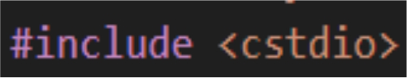
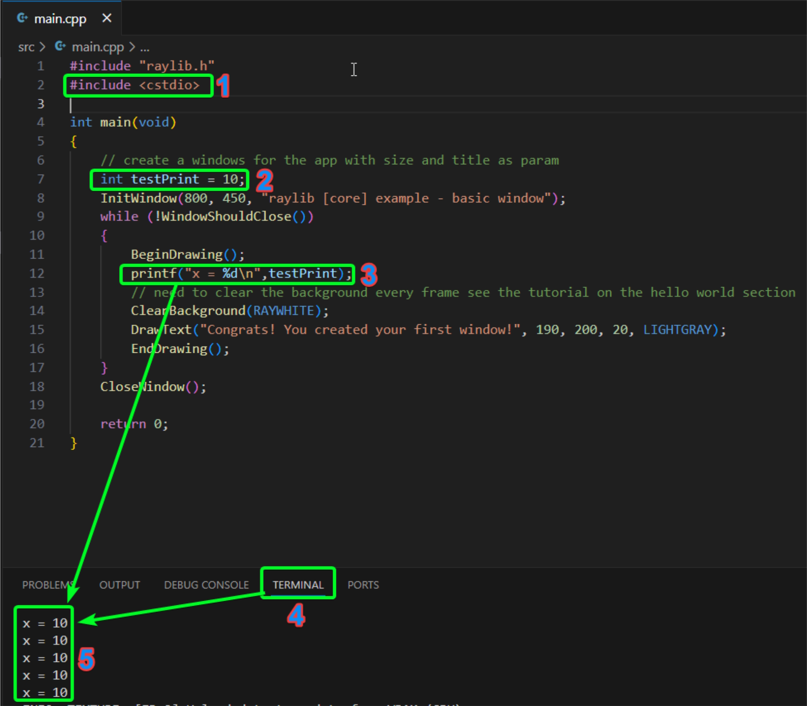
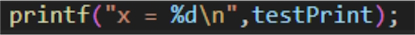
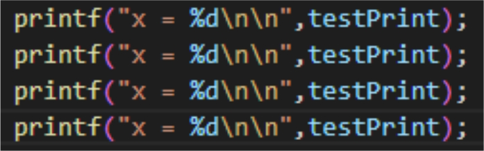
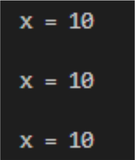
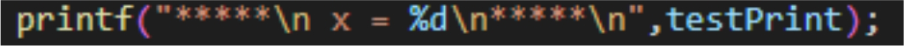
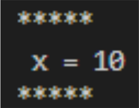
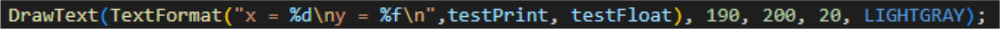
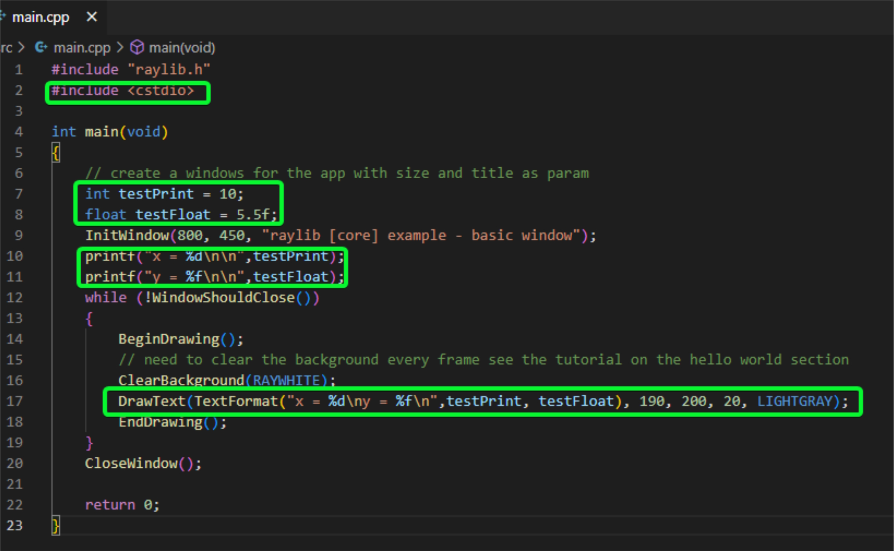

GameDevReady
Il est d'usage de commencer par les variables. Toutefois pour une raison pratique je vais commencer par la fonction printf(). En effet, je voudrais que l'on puisse directement avoir un feedback lors de manipulation de données et un print est ce qui nous convient le mieux.
Nous allons survoler le principe des prints dans la console et le jeu. Cela nous donne l'option d'avoir des "traces" qui nous permettront de lire et d'avoir un feedback à un moment donné dans le code sur une variable donnée.
Le print a quelques limites et est parfois illisible ou inutilisable dans une boucle d'update par exemple.
Le debugger offre un certain nombre d'outils plus avancés pour mettre en pause et avoir le temps de lire et suivre ses données. Toutefois, sa mise en place est hors du scope de cette formation et sera vue lors d'une formation future de niveau intermédiaire.
Mais le print reste un outil formidable pour le prototypage rapide et avoir un retour d'information dans la majorité des cas, même pour développer un projet commercial.
Utiliser printf pour afficher des variables dans la console et
DrawText avec TextFormat dans
Raylib.
Nous allons utiliser une fonction qui s'appelle printf. Pour ce faire, nous devons inclure la bibliothèque Cstdio.
Je vous conseille vivement de parcourir les fonctions ou outils que vous fournit chaque librairie que vous installez. Je vous renvoie au glossaire à la fin de ce pdf pour le lien descriptif.
L'inclusion consiste à lier le code actuel avec soit :
" " (vu plus tard lors de la séparation des éléments)< > (les bibliothèques de base fournies avec C++)Et si vous ne comprenez rien à la lecture de la lib, demandez à chatgpt ou autre IA de vous fournir une description synthétique de la librairie et de ses principaux outils. (je vous avoue que ça va plus vite mais faire les 2 en parallèle paie plus à long terme).
Nous verrons pas à pas comment l'utiliser dans le screen suivant.

Le printf en lui-même est relativement simple d'emploi, mais la syntaxe nécessaire est un peu rude. C'est pourquoi j'ai décidé d'en faire une carte afin que cela devienne rapidement une habitude. Nous allons nous concentrer sur les types de base. Voyons pour commencer sa structuration.
%[flags][width][.precision][length]specifier
En fait, on ne se servira que du specifier (le type), les autres paramètres ne sont pas nécessaires pour l'instant. Les types de base sont les suivants :
| Specifier | Type | Exemple |
|---|---|---|
%d ou %i |
Entier signé (int) | -42, 0, 123 |
%u |
Entier non signé (unsigned int) | 0, 123, 456 |
%c |
Caractère (char) | 'a', 'B', '5' |
%s |
Chaîne de caractères (char*) | "Hello" |
%f |
Nombre flottant décimal | 3.141593 |
%p |
Adresse mémoire | 0x7fff... |
Il faut encore penser à ajouter le \n qui renvoie à la ligne (mais c'est situationnel, cela dépend de l'affichage que vous voulez obtenir).

Reprenons notre exemple. Appel de la fonction printf et passage des paramètres suivants entre parenthèses :
"x = " : mettre entre " " signifie une écriture de texte, comme vue dans le terminal ou la console (cf image interface)%d : correspond donc à une variable de type entier signé (borne négative et positive +/-)\n : est ce que l'on appelle un retour chariot (sûrement d'une époque lointaine où les dinosaures faisaient de la dactylographie sur machine à écrire)" ", le texte et la valeur seront concaténés en texte pour être affichés dans la consoleLa console peut parfois être surchargée et il est alors plus difficile de trouver les données. C'est pourquoi j'ai fourni quelques screens pour accrocher l'œil rapidement. Le plus simple étant de mettre une ligne vide \n après le print (cf image ci-dessous) ou avant et après, c'est encore plus visible. Ou personnalisez vos prints (peut-être même dans le futur créer une fonction personnalisée qui appelle le printf de la manière qui vous convient le mieux).




La fonction DrawText() de raylib peut prendre en paramètre une fonction de formatage qui est l'équivalent du printf et qui est la suivante : TextFormat(). Ci-dessous l'image du DrawText avec TextFormat qui sera dans l'exercice.

L'exercice est relativement simple : il s'agira d'afficher les valeurs des différentes variables suivantes avec au moins une ligne pour chaque variable. L'output (ou le print dans ce cas) peut soit être fait dans la console ou avec le print de raylib, étant donné que le principe de formatage avec l'option TextFormat() est le même. Le challenge sera de printf les deux variables avec un seul appel de la fonction.

Vous noterez que les deux variables et la syntaxe du DrawText sont présentes dans un unique appel. Il faut toutefois faire plusieurs retours à la ligne selon la taille de la police, ce n'est pas géré automatiquement. Sinon vous pouvez faire deux appels DrawText(). Mais vous devrez alors changer les coordonnées Y et/ou X pour chaque appel supplémentaire.
Et oui ! Le TextFormat() est le printf de Raylib et partage le même formatage.
\n pour une meilleure lisibilitéprintf permet d'afficher des variables formatées dans la console.%d, %f pour matcher les types.TextFormat est l'équivalent d'une mise en forme printf dans raylib pour DrawText.Méthode/fonction : Bloc de code réutilisable qui effectue une tâche spécifique.
Raylib :
Framework léger de dev de jeu. Open-source, multiplateforme et multilangages (c++, c, c#, lua, etc.)
Cstdio :
Lecture et écriture sur la console
Bibliothèque :
Une bibliothèque de programmation est un ensemble de code pré-écrit,
tel que des fonctions et des classes, que les développeurs peuvent utiliser pour accomplir des
tâches spécifiques dans un programme sans avoir à réinventer la roue.
printf correctement.Printf() : pour afficher des textes formatés dans la console
DrawText() : permet d'afficher du texte dans la fenêtre
TextFormat() : pour mettre en forme le DrawText() et lire une variable avec ce dernier